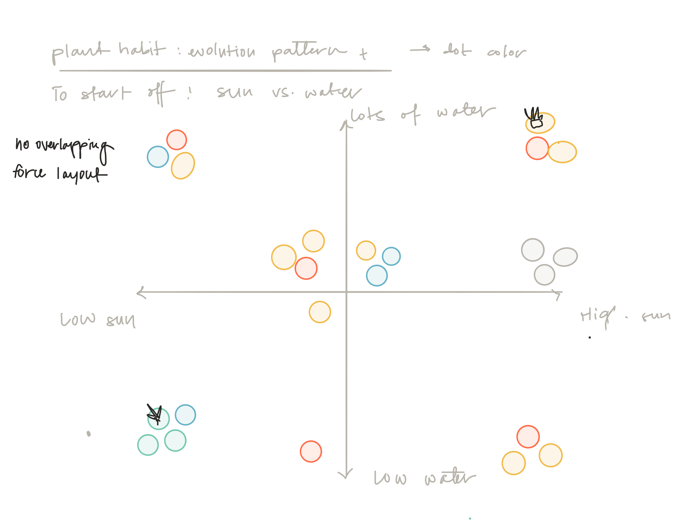

CMPS 165 Final Project Proposal
California House Plant Care Guide
Goal
We wish to create a visualization for various types of plants that are commercially available in the USA. We will focus on basic care such as amount of water needed and amounts of sunlight required. Our goal is for this guide to serve as a quick and easily navigable reference for plant maintence. In doing so, the visualization can also serve as a simple buyer's guide, by showing various plants and their needs to jugde agaisnt your own lifestyle choices. We also plan to include more variables to examine such as tempurature tolerance, humidity, plant types, and ph levels of soil.
Definite Variables
- Plant Habit
- Water Use
- Sun/Shade Requirements
- Plant Habit
- Pet Safe
- Toxicity
- Size at Maturity
- Bloom Period
Additional Variables
- Temperature Requirements (Max Cold/Hot)
- PH Soil Preferences
- Life Span
- Invasiveness
Data Sets
Potential Data Sets
There exists a number of encyclopedia's on the subject and so, they may serve as useful sources to supplement any missing information from databases or to simplify certain aspects of the data if needed. Such communities can also help us narrow down choices in plants to include in the visualization.
- WUCOLS PLant Database
- Dave's Garden Plant Database
- Guide to Houseplant's Encyclopedia
- National Gardening Database
Relevant Visualization Sources
There does not exist a visulization that we could find for the topic, so what we have instead are static charts and inspiration for the visual layout of the project
- University of Illinois Extension's House Plant Watering Chart
- Billing Brigde Animal Hosptial, April 25, 2017 Pet Friendly House Plant Guide
- CMPS165 Final Projects Winter 2015 Popular Drugs
- New York Times's, February 12, 2012 Four Ways to Slice Obama's 2013 Budget Proposal
- CMPS263, Winter 2018 Influential Women in History
{kind=link}
Sketch of Proposed Visualization
Contact Information
- Name: Rebecca Bui, Melanie Lum, Conor Rogers, Rishita Roy
- Email: rubui@ucsc.edu, mhlum@ucsc.edu, cojaroge@ucsc.edu, riroy@ucsc.edu
- Github Link